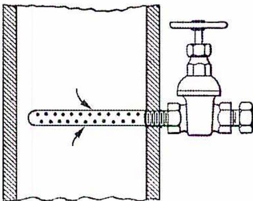
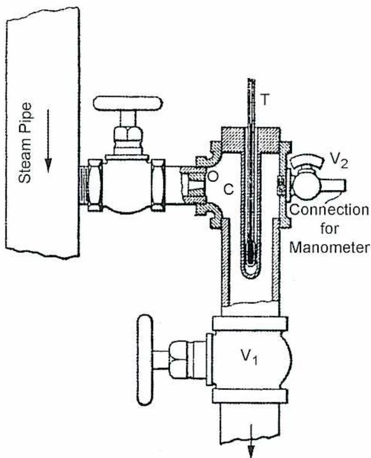
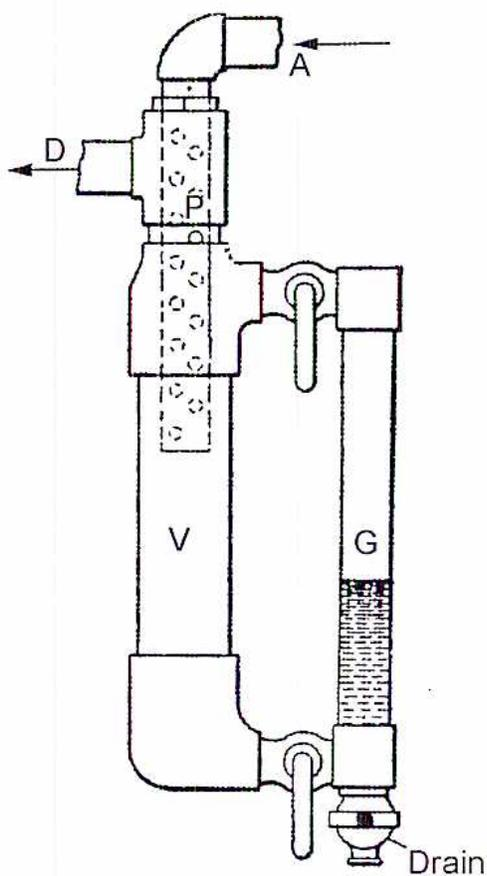
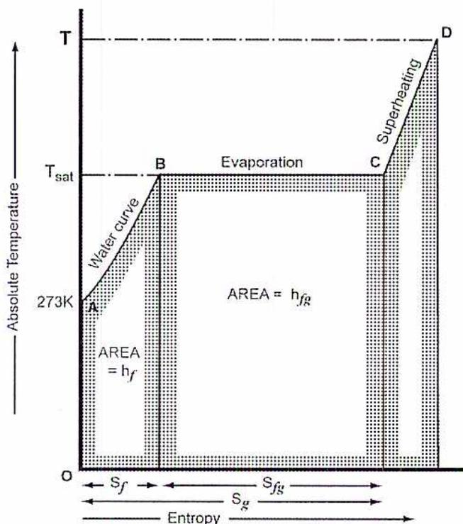
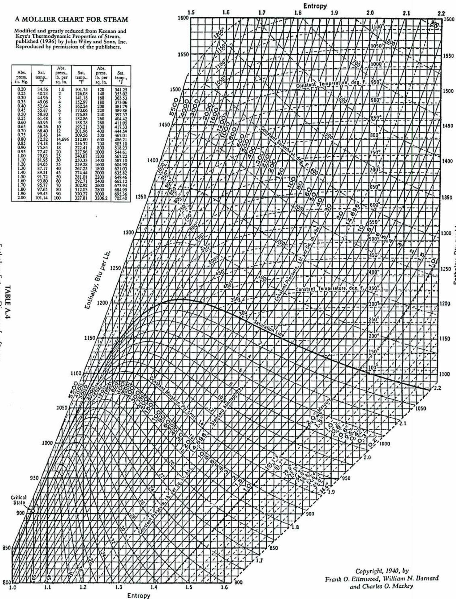

Thermodynamics of Steam
2
Learning Outcome
When you complete this learning material, you will be able to
Perform calculations related to properties of steam.
Learning Objectives
You will specifically be able to complete the following tasks:
- 1. Describe the basic properties of water and steam.
- 2. Perform calculations involving specific enthalpy, dryness fraction, specific heat and specific volume using steam tables.
- 3. Explain the principles and use of calorimeters to measure the dryness fraction of wet steam.
- 4. Calculate the dryness fraction of steam based on calorimeter data.
- 5. Calculate the internal energy of steam under given conditions.
- 6. Explain the concept of entropy and the use of the temperature-entropy diagram. Calculate the change in entropy for a particular change in enthalpy at a constant temperature.
- 7. Determine steam properties using a Mollier Chart.
- 8. Calculate boiler thermal efficiency using test data provided
Objective 1
Describe the basic properties of water and steam.
INTRODUCTION
Steam is an important working fluid for power generation and other industrial processes. Understanding its behaviour and properties is critical to the successful operation of steam-related equipment and processes.
The widespread use of steam is due to the availability of water and the relative safety of steam compared to other fluids. There are some disadvantages to using water and steam but they are minor compared to using thermodynamically superior fluids, such as ammonia, that are much more hazardous.
WATER TO STEAM
The transition from water to steam as heat is added is dependent on pressure and temperature conditions. The three steps to the transition, illustrated in Fig. 1, show the behaviour of water and steam in terms of temperature and pressure as heat is added (on the x-axis). Enthalpy is a thermodynamic quantity equal to the internal energy of a system plus the product of its volume and pressure. Enthalpy is the amount of energy in a system capable of doing mechanical work.
Specific enthalpy refers to the amount of heat in a unit mass of one kg. The amount of heat added to water and steam begins at starting point A shown with an enthalpy of zero at 0°C.
![Temperature-Enthalpy Chart for Steam. The y-axis is Temperature, Deg. Celsius (0 to 400) and the x-axis is Heat added per kg = Kilojoules (0 to 3500). The chart shows the heating of water from point A to point D. Point A is at (0, 0). Point B is at (419.04, 100) and labeled '101.3 kPa Pressure'. The segment AB is labeled 'Heat of Liquid h_f = 419.04'. Point C is at (2676.04, 100) and labeled 'Latent Heat = h_fg = 2257'. The segment BC is horizontal. Point D is on the superheated vapor curve. The critical point is at (2099.3, 374.136) labeled 'Critical Temperature = 374.136 Deg. C.' and 'h_f = 2099.3'. A horizontal line at 200°C is labeled '1553.8 kPa Pressure' and 'h_f = 852.45' and 'h_fg = 1940.7'.](5d92d5c9cc01a262b0389d138caa9aea_img.jpg)
Figure 1
Temperature-Enthalpy Chart for Steam
The first step starts at point A as water is heated. The process follows the line AB and applies to a situation where the pressure is atmospheric (101.325 kPa). At point B, 419.04 kJ has been added to the water, which is still in liquid form, and the temperature is now 100°C. The added heat is called sensible heat because it causes an increase in the temperature of the water which can be “sensed” and measured. This term sensible heat is now replaced with the terms liquid enthalpy or enthalpy of water.
In the next stage, shown as BC in Fig. 1, the water is progressively turned into steam. This occurs at the saturation temperature or the boiling point. The heat added is called latent heat because it does not produce a change in temperature. For water at atmospheric pressure, the amount of latent heat required to go from B to C is 2257 kJ/kg. Although the term latent heat is still used, it is more commonly called enthalpy of evaporation .
At point C, all of the water has been transformed to steam and, since there is no more liquid, the steam is now dry and saturated and is called dry steam . In between points B and C, the mixture of water and steam is called wet steam . The proportion of water and steam is called the dryness fraction which increases from 0 (or 0% steam) at point B to 1 (or 100% steam) at point C.
Once point C is reached, the addition of further heat again causes an increase in temperature. The steam is now superheated and dry .
Referring to Fig. 1, at increased pressures, the saturation (or boiling) temperature also increases and more sensible heat is needed to reach the higher saturation temperature. If water is at a pressure of 1553.8 kPa, boiling occurs at 200°C and 852.45 kJ/kg of sensible heat is required. However, less latent heat (1940.7 kJ/kg) is required to reach the dry saturated temperature.
As the pressure is increased, a point is reached where no latent heat is required to go from water to steam. This point is called the critical pressure and occurs at a pressure of 22 090 kPa and a temperature of 374.136°C.
STEAM TABLES
The properties of steam are fully described in Steam Tables. Because there is no theoretical equation for calculating the properties of steam directly, they are determined experimentally. As the importance of steam grew both for power generation and steam uses in industrial processing, it became crucial that accurate tables were available for both design and operational purposes. Early tables were adequate for low pressures and temperatures but the tables were extended as pressures and temperatures increased substantially in the early to middle 1900s.
Although there are a variety of steam table sets available, in this course tables extracted from Keenan, Keyes, Hill and Moore published by John Wiley and Sons Inc. are used. Tables I and II cover the properties of steam in the saturated region and are basically the same except that Table I begins with pressure as the starting point and Table II begins with temperature. Table III covers the properties for superheated steam and is laid out differently because the temperature increases again with the addition of heat. A specialized chart called a Mollier chart which is based on enthalpy and entropy is also included at the end of the tables.
Interpolation is used to estimate intermediate values from the tables. Because the table cannot show all values, the same proportion is applied from one part of the table to another to obtain intermediate values.
For example, Table I does not provide any values between 100 kPa and 125 kPa. To find the enthalpy \( h_f \) for a pressure of 115 kPa, the following interpolation is required:
$$ \begin{aligned} h_f \text{ at } 115 \text{ kPa} &= h_f \text{ at } 100 \text{ kPa} + \frac{15}{25} (h_f \text{ at } 125 \text{ kPa} - h_f \text{ at } 100 \text{ kPa}) \\ &= 417.46 \text{ kJ/kg} + \frac{15}{25} (444.32 - 417.46) \text{ kJ/kg} \\ &= 417.46 \text{ kJ/kg} + \frac{15}{25} (26.86) \text{ kJ/kg} \\ &= 417.46 \text{ kJ/kg} + 16.12 \text{ kJ/kg} \\ &= \mathbf{433.58 \text{ kJ/kg}} \text{ (Ans.)} \end{aligned} $$
Objective 2
Perform calculations involving specific enthalpy, dryness fraction, specific heat and specific volume using steam tables.
SPECIFIC ENTHALPY
Enthalpy is the quantity of heat, in kilojoules (kJ), contained in a substance. The enthalpy at any given time depends on the temperature and pressure of the substance. For water and steam, enthalpy is measured from a standard starting point of 0°C, therefore, water at 0°C has an enthalpy of zero.
Steam tables record specific enthalpy for saturated or superheated steam and the units of measure are kJ/kg. In Tables I and II, the first specific enthalpy shown, \( h_f \) or sensible heat, is for saturated liquid (for example, point B in Fig. 1) or the boiling point where there is 100% water and no steam.
The second specific enthalpy is the enthalpy of evaporation or the latent heat, \( h_{fg} \) . It is the amount of heat required to go from point B to point C in Fig. 1. At the saturated vapour stage, \( h_g \) , the specific enthalpy is the sum of the sensible and latent heats so that:
$$ h_g = h_f + h_{fg} $$
In Table III, the specific enthalpy for superheated steam is shown for combinations of pressure and temperature. Taking a pressure and temperature from Table I or II and finding the equivalent (or close to it) in Table III, the value \( h_g \) shows that the enthalpy increases.
Example 1
Find the heat required to convert 10 kg of water at 15°C to saturated steam at 1400 kPa. What is the final temperature?
Answer
From the Steam Tables, the specific enthalpies at the two conditions are:
$$ h_f \text{ at } 1400 \text{ kPa} = 830.30 \text{ kJ/kg} $$
$$ h_f \text{ at } 15^\circ\text{C} = 62.99 \text{ kJ/kg} $$
Therefore, the difference in specific enthalpy is:
$$ \begin{aligned}h_f \text{ at } 1400 \text{ kPa} - h_f \text{ at } 15^\circ\text{C} &= 830.30 \text{ kJ/kg} - 62.99 \text{ kJ/kg} \\&= 767.31 \text{ kJ/kg}\end{aligned} $$
The latent heat ( \( h_{fg} \) ) at 1400 kPa is 1959.7 kJ/kg. Applying equation \( h_g = h_f + h_{fg} \) and multiplying by the total mass, the heat required is:
$$ \begin{aligned}h_g &= h_f + h_{fg} \\h_g &= 767.31 \text{ kJ/kg} + 1959.7 \text{ kJ/kg} \\&= 2727.01 \text{ kJ/kg} \times 10 \text{ kg} \\&= \mathbf{27270 \text{ kJ}} \text{ (Ans.)}\end{aligned} $$
The final temperature is the saturation temperature \( 195.07^\circ\text{C} \) which is found in Table I.
Example 2
What is the enthalpy of 1 kg of steam at 3000 kPa when it is dry and saturated and when it is superheated by \( 55^\circ\text{C} \) ?
Answer
The specific enthalpy ( \( h_g \) ) of steam at 3000 kPa when it is dry and saturated is 2804.2 kJ/kg, found in Table I.
The saturation temperature, at 3000 kPa, is \( 233.9^\circ\text{C} \) . With \( 55^\circ\text{C} \) of superheat, the final temperature is \( 288.9^\circ\text{C} \) . To obtain the specific enthalpy at this temperature, interpolate between the values given in Table III for \( 250^\circ\text{C} \) and \( 300^\circ\text{C} \) at 3000 kPa.
$$ \begin{aligned}h \text{ at } 288.9^\circ\text{C} &= h \text{ at } 250^\circ\text{C} + \frac{38.9}{50} (h \text{ at } 300^\circ\text{C} - h \text{ at } 250^\circ\text{C}) \\h \text{ at } 288.9^\circ\text{C} &= 2855.8 \text{ kJ/kg} + \frac{38.9}{50} (2993.5 - 2855.8) \\&= 2855.8 \text{ kJ/kg} + \frac{38.9}{50} (137.70) \\&= 2855.8 \text{ kJ/kg} + 107.13 \\&= \mathbf{2962.93 \text{ kJ/kg}} \text{ (Ans.)}\end{aligned} $$
DRYNESS FRACTION
When there is a mixture of water and steam, or wet steam, the relative amounts of water and steam are described in terms of a dryness fraction, called the steam quality. The symbol \( x \) is used for steam quality and it is the fraction of the water and steam mixture that is in the vapour (or steam) phase. It is used in wet steam calculations for specific volume, enthalpy and entropy. Therefore, for any point in the wet steam phase, the specific enthalpy is calculated using the equation:
$$ h = h_f + xh_{fg} $$
Example 3
What is the specific enthalpy of 1 kg of steam at 2500 kPa with a dryness fraction of 0.8?
Answer
Using the values from Table I in the Steam Tables and the equation \( h = h_f + xh_{fg} \) , the specific enthalpy is calculated as:
$$ \begin{aligned}h &= h_f + xh_{fg} \\h &= 962.11 \text{ kJ/kg} + (0.8 \times 1841.0) \text{ kJ/kg} \\h &= 962.11 \text{ kJ/kg} + 1472.8 \text{ kJ/kg} \\&= 2434.91 \text{ kJ/kg (Ans.)}\end{aligned} $$
SPECIFIC HEAT
The specific heat of water (the amount of heat in J (Joules) needed to raise the temperature of 1 g of water by 1°C) is 4.1894 kJ/kg/°C. This can be verified by looking at the value for 100°C, which is 418.94 kJ/kg at atmospheric pressure, and then it dividing by 100.
At 2000 kPa, the sensible heat ( \( h_f \) ) is 908.79 kJ/kg. Dividing 908.79 kJ/kg by the saturation temperature (212.42°C), the specific heat is 4.2783 kJ/kg/°C. The difference increases with pressure and temperature.
The specific heat of steam varies even more although it is possible to estimate the specific heat in a narrow range of temperature and pressure. For example, to determine the specific heat of superheated steam at 6000 kPa between 400°C and 500°C, the specific heat is calculated to be:
$$ h \text{ at } 6000 \text{ kPa and } 400^\circ\text{C} = 3177.2 \text{ kJ/kg} $$
$$ h \text{ at } 6000 \text{ kPa and } 500^\circ\text{C} = 3422.2 \text{ kJ/kg} $$
$$ \begin{aligned}\text{Specific heat} &= \frac{3422.2 - 3177.2 \text{ kJ/kg}}{100^\circ\text{C}} \\ &= 2.45 \text{ kJ/kg/}^\circ\text{C}\end{aligned} $$
SPECIFIC VOLUME
The specific volume is the volume per unit of mass of any substance. In the steam tables, the specific volume \( v \) is measured in \( \text{cm}^3/\text{g} \) .
Referring to the steam tables, for wet steam, the specific volume of the liquid portion is very small compared to the specific volume for the steam component at lower pressures and temperatures. As pressures and temperatures rise to the critical pressure and temperature, their specific volumes eventually become equal. For many calculations, the specific volume of the water can be ignored without significant loss of accuracy.
To calculate the specific volume for wet steam, the dryness fraction is used in the same way as it is for enthalpy (taking into account that the tables only show \( v_f \) and \( v_g \) ) using the equation:
$$ v = v_f + x(v_g - v_f) $$
Example 4
What is the specific volume of 1 kg of steam at 2500 kPa with a dryness fraction of 0.8?
Answer
Using the values from Table I in the Steam Tables and equation \( v = v_f + x(v_g - v_f) \) , the specific volume is calculated as:
$$ \begin{aligned}v &= v_f + x(v_g - v_f) \\ v &= 1.1973 \text{ cm}^3/\text{g} + 0.8(79.98 - 1.1973) \text{ cm}^3/\text{g} \\ v &= 1.1973 \text{ cm}^3/\text{g} + 0.8(78.78) \text{ cm}^3/\text{g} \\ v &= 1.1973 \text{ cm}^3/\text{g} + 63.02 \text{ cm}^3/\text{g} \\ v &= 64.22 \text{ cm}^3/\text{g} \\ v &= 0.06422 \text{ m}^3/\text{kg} \text{ (Ans.)}\end{aligned} $$
Objective 3
Explain the principles and use of calorimeters to measure the dryness fraction of wet steam.
MEASURING THE DRYNESS FRACTION OF STEAM
In steam plants it is frequently necessary to measure the dryness fraction of steam, if saturated steam is used. Steam that is overly wet (too much moisture content) causes corrosion and erosion in equipment. Wet steam also reduces plant thermal efficiencies and increases the risk of water hammer in piping.
A calorimeter measures the dryness fraction of wet steam and determines the amount of heat in the steam. There are three types of calorimeter used:
- • Throttling
- • Separating
- • Electric
THROTTLING CALORIMETERS
Throttling calorimeters, used for steam with low moisture content, are based on the principle that when steam pressure is reduced through an orifice or constriction, the enthalpy remains the same because there is no opportunity for the heat to be removed. If the steam contains a moderate amount of moisture, the wet steam is converted, or flashed, to superheated steam at a lower pressure, as shown in Fig. 2. The process is isenthalpic, which means that there is no change in enthalpy. The pressure and temperature at point 2 are used to determine the enthalpy from the Steam Tables. Since the enthalpy at points 1 and 2 are the same, it can be used to calculate the dryness fraction at the higher pressure.
![Figure 2: A Pressure-Temperature (P-T) diagram showing the effect of throttling on wet steam. A saturation curve is shown with pressure (P) on the vertical axis and temperature (T) on the horizontal axis. Point 1 is on the saturation curve, representing the initial state. A dashed line labeled P1 passes through point 1. Point 2 is to the right of the saturation curve, representing the final state after throttling. A dashed line labeled 'P CALORIMETER = P2' passes through point 2. A solid line connects point 1 to point 2, with the text 'process 1 → 2 is isenthalpic (h1 = h2)' written next to it.](36ac3e730a00d3f42d3400f5709f641a_img.jpg)
Figure 2
Effect of Throttling on Wet Steam
Throttling calorimeters are applicable to wet steam conditions that range approximately from 0.965 dryness fraction at 700 kPa to 0.93 at 2700 kPa. For wetter steam, a separating calorimeter must be inserted upstream of the throttling calorimeter.
The steam sample is taken from a vertical pipe as close as possible to the engine, turbine, or boiler tested. An example of a good sampling method is shown in Fig. 3.

Figure 3
Example of Sampling Tube
A simple throttling calorimeter that is easy to construct is illustrated in Fig. 4. The steam is throttled through the orifice O into a chamber C. The temperature is measured with a thermometer T and the pressure is measured with a manometer connected to valve V 2 . The steam is allowed to escape to a vent through valve V 1 . To ensure that no heat is lost to the surroundings, all parts of the calorimeter are insulated from the steam main.
If the orifice is sized correctly, the steam is at atmospheric pressure after throttling and the operation can be simplified. When taking the measurement, wait until the temperature has reached a maximum value and then decreased slightly.

The diagram shows a steam pipe on the left with an arrow pointing downwards, labeled 'Steam Pipe'. This pipe connects to a valve assembly. The assembly includes a valve with a handle, an orifice labeled 'O', and a chamber containing a thermometer labeled 'T'. A side connection labeled 'Connection for Manometer' is also present. Below the chamber is another valve with a handle, labeled 'V1'. To the right of the chamber is a valve labeled 'V2'. The steam exits from the bottom of the assembly through an opening with a downward-pointing arrow.
Figure 4
Example of Simple Throttling Calorimeter
SEPARATING CALORIMETERS
A separating calorimeter, used for steam with high moisture content, is inserted upstream of the throttling calorimeter to reduce the amount of moisture so that the throttling calorimeter can be used effectively. If the moisture content in the steam is too high (for example, a dryness fraction of less than 96.5% at 700 kPa,) then a separating calorimeter is used to separate most of the moisture before the steam is passed to a throttling calorimeter. An example of a simple separating calorimeter is shown in Fig. 5. The steam enters at point A, exits at point D, and condenses in a container. The change in direction required as it passes through the tube with holes produces inertial forces that cause the moisture to collect in the cavity V. The amount of liquid collected is measured in the sight glass G.

The diagram shows a vertical cylindrical vessel labeled 'V' at its base. Above this vessel is a chamber labeled 'P'. An inlet pipe, labeled 'A', enters from the top and curves into the chamber 'P'. An outlet pipe, labeled 'D', exits from the left side of chamber 'P'. A vertical sight glass, labeled 'G', is connected to the side of the main vessel 'V' via two pipes. The lower pipe of the sight glass assembly has a 'Drain' at its bottom end. Inside the chamber 'P', there are small circles representing water droplets, indicating the separation of liquid from the steam.
Figure 5
Example of Simple Separating Calorimeter
A separating calorimeter can also be used to calculate the dryness fraction without the use of a throttling calorimeter. In this case, the steam exiting at point D is condensed and the mass of liquid at point D and in sight glass G is recorded for comparison.
A disadvantage of a separating calorimeter is that the resulting calculation tends to underestimate the wetness of the steam because some of the moisture carries over with the steam.
ELECTRIC CALORIMETERS
Electric calorimeters are also used to measure the dryness fraction of wet steam. A measured amount of steam is heated with a known amount of electric heat until the steam becomes superheated. The enthalpy is computed from the resultant pressure and temperature from the Steam Tables and the enthalpy of the wet steam is calculated by subtracting the electric heat added. This requires an accurate measurement of the steam flow and the flow may be difficult to measure.
Objective 4
Calculate the dryness fraction of steam based on calorimeter data.
MEASURING DRYNESS USING A THROTTLING CALORIMETER
The dryness of the wet steam is calculated on the basis that the enthalpy of the wet steam is equal to the enthalpy of the throttled steam which is now superheated. Using the equation developed for determining the dryness of wet steam, \( h = h_f + xh_{fg} \) , and substituting the enthalpy of the superheated steam \( h_{sup} \) , the following equation is derived:
$$ \begin{aligned}h_{sup} &= h_f + xh_{fg} \\h_f + xh_{fg} &= h_{sup} - h_f \\xh_{fg} &= \frac{h_{sup} - h_f}{h_{fg}} \\x &= \frac{h_{sup} - h_f}{h_{fg}}\end{aligned} $$
Example 5
Wet steam at a pressure of 1000 kPa is sampled in a throttling calorimeter. If the temperature is measured at 100°C and the pressure is 100 kPa, what is the quality of the steam?
Answer
From Table III in the Steam Tables, the specific enthalpy of the superheated steam is 2676.2 kJ/kg. From Table I for a pressure of 1000 kPa, the enthalpy for the saturated liquid \( h_f \) is 762.81 kJ/kg and the latent heat \( h_{fg} \) is 2015.3 kJ/kg. The dryness of the wet
steam is found using the equation \( x = \frac{h_{sup} - h_f}{h_{fg}} \) :
$$ x = \frac{h_{sup} - h_f}{h_{fg}} $$
$$ x = \frac{2676.2 \text{ kJ/kg} - 762.81 \text{ kJ/kg}}{2015.3 \text{ kJ/kg}} $$
$$ x = \frac{1913.39 \text{ kJ/kg}}{2015.3 \text{ kJ/kg}} $$
$$ \begin{aligned} x &= 0.949 \\ &= 94.9\% \text{ (Ans.)} \end{aligned} $$
MEASURING DRYNESS USING A SEPARATING CALORIMETER
Using a separating calorimeter, a rough estimate of the dryness is made for steam that is too wet for a throttling calorimeter. If the mass of the water collected in the calorimeter is \( m_1 \) and the mass of the condensed steam is \( m_2 \) , the dryness is calculated using the equation:
$$ x = \frac{m_2}{m_2 + m_1} $$
This calculation tends to underestimate the wetness of the steam because some of the moisture carries over with the steam.
MEASURING DRYNESS USING A SEPARATING AND THROTTLING CALORIMETER
A more accurate method of measuring dryness is to sample the steam in a throttling calorimeter after it goes through the separating calorimeter to determine the remaining moisture in the steam.
Fig. 6 illustrates a combined separating and throttling calorimeter.
![Diagram of a Combined Separating and Throttling Calorimeter. Steam is drawn from a source through a 'SAMPLING TUBE' into a 'SEPARATING CALORIMETER'. The 'Steam pressure' is indicated at the inlet and within the separating calorimeter. Water, labeled 'Mass m1', is collected at the bottom of the separating calorimeter. The remaining steam passes through a 'THROTLING ORIFICE' into a 'THROTLING CALORIMETER'. The mass of steam entering the throttling calorimeter is labeled 'm2'. Inside the throttling calorimeter, 'Temperature' and 'Pressure' are measured. Condensate, labeled 'Mass m2', is collected at the bottom of the throttling calorimeter.](8fbdfc3d17fb1dae7b2d8f5a287fa9fc_img.jpg)
Figure 6
Combined Separating and Throttling Calorimeter
If \( x_2 \) is the dryness of the steam entering the throttling calorimeter, then the amount of dry steam is \( x_2 m_2 \) kg. The total mass of the sample is \( m_1 + m_2 \) so the dryness of the sample \( x \) is:
$$ x = \frac{x_2 m_2}{m_1 + m_2} $$
In this equation, the apparent dryness of the separating calorimeter as defined in equation \( x = \frac{m_2}{m_2 + m_1} \) , is \( x_1 \) so that the equation is:
$$ x = x_1 \times x_2 $$
Example 6
Wet steam at a pressure of 1400 kPa is sampled by a separating and throttling calorimeter. The amount of water obtained from the separating calorimeter is 0.4 kg. In the throttling calorimeter, the temperature is measured at 140°C and the pressure is 100 kPa. The mass of the condensate collected from the throttling calorimeter is 9 kg. What is the dryness fraction of the steam?
Answer
The dryness of steam from the separating calorimeter is obtained using the equation
$$ x_1 = \frac{m_2}{m_2 + m_1} : $$
$$ x_1 = \frac{m_2}{m_2 + m_1} $$
$$ x_1 = \frac{9 \text{ kg}}{9 \text{ kg} + 0.4 \text{ kg}} $$
$$ x_1 = 0.9574 $$
From Table III in the Steam Tables, the specific enthalpy of the superheated steam in the throttling calorimeter is calculated by interpolation:
$$ h \text{ at } 140^\circ\text{C} = h \text{ at } 100^\circ\text{C} + \frac{40}{50} (h \text{ at } 150^\circ\text{C} - h \text{ at } 100^\circ\text{C}) $$
$$ h \text{ at } 140^\circ\text{C} = 2676.2 \text{ kJ/kg} + \frac{40}{50} (2776.4 - 2676.2) \text{ kJ/kg} $$
$$ h \text{ at } 140^\circ\text{C} = 2676.2 \text{ kJ/kg} + \frac{40}{50} (100.20) \text{ kJ/kg} $$
$$ h \text{ at } 140^\circ\text{C} = 2676.2 \text{ kJ/kg} + 80.16 \text{ kJ/kg} $$
$$ h \text{ at } 140^\circ\text{C} = 2756.36 \text{ kJ/kg} $$
From Table I for a pressure of 1400 kPa, the enthalpy for the saturated liquid \( h_f \) is 830.3 kJ/kg and the latent heat \( h_{fg} \) is 1959.7 kJ/kg. The dryness of the wet steam is found using
the equation \( x = \frac{h_{sup} - h_f}{h_{fg}} \) :
$$ x = \frac{h_{sup} - h_f}{h_{fg}} $$
$$ x = \frac{2756.36 - 830.3}{1959.7} $$
$$ x = 0.9828 \text{ or } 98.28\% $$
The total dryness is the product of the two dryness calculations using the equation \( x = x_1 \times x_2 \) :
$$ x = x_1 \times x_2 $$
$$ x = 0.9574 \times 0.9828 $$
$$ x = 0.941 $$
$$ = 94.1\% \text{ (Ans.)} $$
Objective 5
Calculate the internal energy of steam under given conditions.
INTERNAL ENERGY
Internal energy is another property of steam that is found in the Steam Tables. Internal energy follows the First Law of Thermodynamics which states that work and heat are equivalent and interchangeable. The equation associated with the First Law of Thermodynamics states that heat added to a system causes either a change in the internal energy or work done on the system:
$$ Q = \Delta U + W $$
In this equation, \( U \) represents internal energy. \( Q \) represents enthalpy, with a scale beginning at an enthalpy of zero at \( 0^{\circ}\text{C} \) . In other words, \( Q = h \) .
The above equation applies to any non-flow process. For flow processes, factors such as velocity and elevation have to be considered and the production of steam in a boiler is a common example. The work done on the fluid causes changes in pressure and temperature. Therefore, the work \( W \) can be expressed as \( p v \) (pressure in kPa \( \times \) specific volume in \( \text{m}^3/\text{kg} \) ).
Equation \( Q = \Delta U + W \) can thus be rewritten as:
$$ h = \Delta u + p v $$
Note how this equation applies to a boiler. The feedwater enters the boiler at a pressure of \( P \) kPa and a specific volume \( v_1 \) so that the flow energy is \( P v_1 \) . Its internal energy at this point is \( u_1 \) . Thus the enthalpy is:
$$ h_1 = u_1 + p_1 v_1 $$
Heat is added until the boiling point is reached. Most of the heat goes into increasing the internal energy through an increase in temperature. The pressure is constant and there is only a minor increase in the specific volume.
The enthalpy at the boiling point is:
$$ h_f = u_f + p_1 v_f $$
This can be verified from the Steam Tables. Taking a pressure of 2000 kPa in Table I at the boiling point:
$$ \begin{aligned} h_f &= U_f + p_1 v_f \\ 908.79 &= 906.44 + 2000 \times \frac{1.1767}{1000} \\ 908.79 &= 906.44 + 2.35 \\ 908.79 &= 908.79 \end{aligned} $$
During the next phase, the water is transformed from a liquid to a vapour. The pressure and temperature remain constant while the specific volume increases to \( v_g \) as the liquid is turned into a vapour. Some of the heat is used to increase the internal energy to free the molecules so that the water can be changed to a vapour and the remaining heat increases the volume. The equation is now written as:
$$ h_{fg} = (u_g - u_f) + p(v_g - v_f) $$
Example 7
Calculate the change in internal energy experienced in a boiler as 1 kg of feedwater at 40°C and 500 kPa is heated to produce steam with a dryness fraction of 0.97. Verify with the internal energy column in the table.
Answer
The enthalpy of the feedwater, at 40°C, from the Steam Tables is 167.57 kJ/kg and the specific volume is 1.0078 cm 3 /kg. The internal energy at 500 kPa, using the equation \( h_f = u_f + p_1 v_f \) , is:
$$ \begin{aligned} h_f &= u_f + p_1 v_f \\ u_f &= h_f - p_1 v_f \\ u_f &= 167.57 \text{ kJ/kg} - 500 \times \frac{1.0078 \text{ cm}^3/\text{kg}}{1000 \text{ cm}^3/\text{kg}} \\ u_f &= 167.57 \text{ kJ/kg} - 500 \times 0.0010078 \text{ cm}^3/\text{kg} \\ u_f &= 167.57 \text{ kJ/kg} - 500 \times 0.0010078 \text{ cm}^3/\text{kg} \\ u_f &= 167.57 \text{ kJ/kg} - 0.5039 \text{ cm}^3/\text{kg} \\ u_f &= 167.07 \text{ kJ/kg} \end{aligned} $$
The enthalpy of the steam, at 500 kPa, is found using the equation \( h = h_f + xh_{fg} \) :
$$ \begin{aligned}h &= h_f + xh_{fg} \\h &= 640.23 \text{ kJ/kg} + 0.97 \times 2108.5 \text{ kJ/kg} \\h &= 640.23 \text{ kJ/kg} + 2045.25 \text{ kJ/kg} \\h &= 2685.48 \text{ kJ/kg}\end{aligned} $$
The specific volume is calculated using the equation \( v = v_f + x(v_g - v_f) \) :
$$ \begin{aligned}v &= v_f + x(v_g - v_f) \\v &= 1.0926 \text{ cm}^3/\text{g} + 0.97(374.9 - 1.0926) \text{ cm}^3/\text{g} \\v &= 1.0926 \text{ cm}^3/\text{g} + 0.97(373.8074) \text{ cm}^3/\text{g} \\v &= 1.0926 \text{ cm}^3/\text{g} + 362.5932 \text{ cm}^3/\text{g} \\v &= 363.69 \text{ cm}^3/\text{g} \\v &= 0.36369 \text{ m}^3/\text{kg}\end{aligned} $$
The internal energy is:
$$ \begin{aligned}u_g &= h_2 - p_2 v_2 \\u_g &= h_2 - p_2 v_2 \\u_g &= 2685.48 \text{ kJ/kg} - 500 \text{ kPa} \times 0.36369 \text{ m}^3/\text{kg} \\u_g &= 2685.48 \text{ kJ/kg} - 181.85 \text{ m}^3/\text{kg} \\u_g &= 2503.63 \text{ kJ/kg}\end{aligned} $$
Therefore, the change of internal energy is:
$$ \begin{aligned}\Delta u &= u_g - u_f \\ \Delta u &= 2503.63 \text{ kJ/kg} - 167.07 \text{ kJ/kg} \\ \Delta u &= 2336.56 \text{ kJ/kg}\end{aligned} $$
The initial internal energy is read directly from the tables and is equivalent to the calculated internal energy. The final internal energy is obtained from the tables with allowance for the dryness fraction.
$$ u_g = u_f + xu_{fg} $$
$$ u_g = 639.68 \text{ kJ/kg} + 0.97 \times 1921.6 \text{ kJ/kg} $$
$$ u_g = 639.68 \text{ kJ/kg} + 1863.95 \text{ kJ/kg} $$
$$ u_g = 2503.63 \text{ kJ/kg (Ans.)} $$
Objective 6
Explain the concept of entropy and the use of the temperature-entropy diagram. Calculate the change in entropy for a particular change in enthalpy at a constant temperature.
ENTROPY
A derived property called entropy is useful in calculating the effects of thermodynamic processes. Entropy is derived from the measurable properties of heat and temperature and can be defined as follows.
The entropy of a substance is calculated from the sum of all of the small quantities of heat given to the substance, each divided by the absolute temperature at which it was given.
Entropy is a property of steam that is derived from the Second Law of Thermodynamics. This law states that work must be done to transfer heat from one system to another and that it is impossible for heat to flow from a colder system to a hotter one without expending energy in the form of work.
From the Second Law, the transfer of heat is a process that is dependent on the temperature of the working fluid. Entropy is a function of the heat transferred during parts of a thermodynamic cycle and the absolute temperature, and it serves to define the relationship between heat flow and absolute temperature.
The symbol used for entropy is \( S \) . Change of entropy is \( \Delta S \) and the units used are kilojoule per kelvin (kJ/K). Specific entropy, which is entropy per unit mass, is represented by the symbol \( s \) and the units used are kilojoule per kilogram kelvin (kJ/kgK). Thus, for any small addition of heat \( \Delta Q \) kJ, the increase in entropy \( \Delta S \) will be
$$ \Delta S = \frac{\Delta Q}{T} $$
The symbol \( \Delta \) (Delta) indicates a small change.
TEMPERATURE –ENTROPY DIAGRAM
A temperature-entropy diagram is shown in Fig. 7. The temperature is plotted on the y-axis and the entropy is on the x-axis. The line illustrates the conversion of water to steam at constant pressure through the stages of water, wet steam, and superheated steam. Notice that the areas under the curve are equal to the sensible heat \( h_f \) and the latent heat \( h_{fg} \) .

The diagram illustrates the relationship between Absolute Temperature (T) on the y-axis and Entropy (s) on the x-axis. The process starts at point A (273K, s_f) and proceeds through three stages:
- Water curve: From A to B (T_sat, s_f), the area under the curve represents sensible heat \( h_f \) .
- Evaporation: From B to C (T_sat, s_g), the area under the curve represents latent heat \( h_{fg} \) .
- Superheating: From C to D (T, s), the area under the curve represents the heat added during superheating.
Figure 7
Temperature-Entropy Diagram
An isothermal process is depicted as a straight horizontal line on this diagram. The most important area of constant temperature is the wet steam phase. The calculation of entropy for various dryness fractions is done using the familiar equation:
$$ s = s_f + x s_{fg} $$
Example 8
Calculate the specific entropy of wet steam at a pressure of 1400 kPa and a dryness of 0.96.
Answer
From the Steam Tables, the specific entropy of the saturated liquid is 2.2842 kJ/kgK and the latent entropy is 4.1850 kJ/kgK. Using the equation \( s = s_f + xs_{fg} \) , the entropy is:
$$ \begin{aligned}s &= s_f + xs_{fg} \\s &= 2.2842 \text{ kJ/kgK} + 0.96 \times 4.1850 \text{ kJ/kgK} \\s &= 2.2842 \text{ kJ/kgK} + 4.0176 \text{ kJ/kgK} \\s &= 6.3018 \text{ kJ/kgK (Ans.)}\end{aligned} $$
CHANGE IN ENTROPY
Example 9
One kilogram of dry saturated steam at a pressure of 3000 kPa is throttled to a pressure of 1000 kPa and then expanded at constant entropy. Calculate the increase in entropy.
Answer
| 3000 kPa | \( h_g = 2804.2 \text{ kJ/kgK} \) | \( s_g = 6.1869 \text{ kJ/kgK} \) |
| 1000 kPa | \( h_g = 2778.1 \text{ kJ/kgK} \) |
Throttling process:
$$ \begin{aligned}\text{Enthalpy after} &= \text{Enthalpy before} \\ \text{Enthalpy at 1000 kPa} &= 2804.2 \text{ kJ/kgK}\end{aligned} $$
Since the steam is superheated:
$$ \begin{aligned}\text{Enthalpy of superheat} &= 2804.2 \text{ kJ/kgK} - 2778.1 \text{ kJ/kgK} \\ &= 26.10 \text{ kJ/kgK}\end{aligned} $$
$$ \text{At } 1000 \text{ kPa, } h = 2827.9 \text{ kJ/kgK for } 200^\circ\text{C} $$
$$ h = 2778.1 \text{ kJ/kgK for } 179.91^\circ\text{C} \text{ (Saturation temperature)} $$
$$ \text{Increase } h = (2827.9 \text{ kJ/kgK} - 2778.1 \text{ kJ/kgK}) \text{ for } 20.09^\circ\text{C} $$
$$ \text{Increase } h = 49.8 \text{ kJ/kgK for } 20.09^\circ\text{C} $$
$$ \text{Difference in temperature for } h = 2804.2 \text{ kJ/kgK} - 2778.1 \text{ kJ/kgK} $$
$$ h = 26.10 \text{ kJ/kgK} $$
$$ h = \frac{26.10 \text{ kJ/kgK}}{49.8 \text{ kJ/kgK}} \times 20.09^\circ\text{C} $$
$$ h = 0.5241 \text{ kJ/kgK} \times 20.09^\circ\text{C} $$
$$ h = 10.53^\circ\text{C} $$
$$ \text{Degree of superheat at } 1000 \text{ kPa} = 10.53^\circ\text{C} $$
Entropy at 1000 kPa, 10.5291°C superheat:
$$ T_{sat} = 179.91^\circ\text{C} \quad T_{Sup} = 179.91^\circ\text{C} + 10.53^\circ\text{C} $$
$$ T_{Sup} = 190.44^\circ\text{C} $$
Saturation:
$$ 1000 \text{ kPa} \quad T = 179.91^\circ\text{C} \quad s = 6.5865 $$
$$ T = 200^\circ\text{C} \quad s = 6.6940 $$
$$ \text{Change in entropy } s = \frac{6.6940 \text{ kJ/kgK} - 6.5865 \text{ kJ/kgK}}{200^\circ\text{C} - 179.91^\circ\text{C}} \times (190.44^\circ\text{C} - 179.91^\circ\text{C}) + 6.5865 \text{ kJ/kgK} $$
$$ s = \frac{0.1075 \text{ kJ/kgK}}{20.09^\circ\text{C}} \times 10.53^\circ\text{C} + 6.5865 \text{ kJ/kgK} $$
$$ s = 0.0054 \times 10.53^\circ\text{C} + 6.5865 \text{ kJ/kgK} $$
$$ s = 0.0569 + 6.5865 \text{ kJ/kgK} $$
$$ s = 6.6428 \text{ kJ/kgK} $$
$$ \text{Increase in entropy} = \text{Change in entropy} - \text{Entropy of } 3000 \text{ kPa steam} $$
$$ \text{Increase in entropy} = 6.6428 \text{ kJ/kgK} - 6.1869 \text{ kJ/kgK} $$
$$ \text{Increase in entropy} = \mathbf{0.4559 \text{ kJ/kgK}} \text{ (Ans.)} $$
Objective 7
Determine steam properties using a Mollier Chart.
MOLLIER CHART
A Mollier chart, useful for analyzing steam cycles, is provided at the end of this chapter and can be downloaded from the Second Class Companion Website. Specific enthalpy is on the y-axis and specific entropy is on the x-axis. The saturation line which separates wet steam from superheated steam is shown on the chart along with lines for constant pressure, constant temperature and constant dryness.
It is possible to use the entropy values in the Steam Tables to analyze steam conditions, but the Mollier Chart is valuable for analyzing cycles. Throttling, which is a constant enthalpy process, is represented by a straight horizontal line from the initial pressure and condition to the final pressure.
During an adiabatic process, no heat transfer takes place to and from the surroundings. If the process is reversible, it is then also isentropic (no change in entropy) and the process is represented on the Mollier Chart by a straight vertical line.
Example 9
Steam, with a dryness of 0.96, is throttled from a pressure of 500 kPa. Using the Mollier Chart, what is the final pressure required for the steam to be dry and saturated? What are the enthalpies and entropies for these two points?
Answer
The starting point is found at the intersection of the pressure of 500 kPa and dryness of 0.96. From the Mollier Chart, the enthalpy is estimated as 2660 kJ/kg and the entropy as 6.61 kJ/kgK. Follow a horizontal line to the saturation line. The pressure is approximately 70 kPa with the same enthalpy and an entropy of 7.48 kJ/kgK. These values can be verified using Table I and finding that the enthalpy of 2660 matches that given for a pressure close to 75 kPa.
Example 10
Superheated steam at a pressure of 10 000 kPa and a temperature of 700°C is expanded isentropically to a pressure of 100 kPa. Using the Mollier Chart, what is the change in enthalpy and the dryness fraction after expansion?
Answer
The starting point is found at the intersection of a pressure of 10 000 kPa and a temperature of 700°C. From the Mollier Chart, the enthalpy is estimated as 3870 kJ/kg. Follow a vertical line to a pressure of 100 kPa. The enthalpy is approximately 2610 with a dryness of 0.97. The change in enthalpy is thus 1260 kJ/kg. These values can be verified from the tables.
Objective 8
Calculate boiler thermal efficiency using test data provided.
BOILER EFFICIENCY
When using a boiler, it is important to know the thermal efficiency at which it is operating. A high efficiency boiler is economical and contributes to a high overall efficiency for the whole plant. Many factors contribute to the thermal efficiency, including the type of fuel used, the variation in the load factor of the boiler, the boiler design and maintenance practices. Therefore, it is valuable to be able to calculate the efficiency of a boiler to ensure economical operation.
The efficiency of a boiler is determined by taking the ratio of the heat transferred to produce steam and the energy released by the fuel supplied to the boiler or:
$$ \text{Boiler efficiency} = \frac{\text{Heat transferred to water and steam}}{\text{Heat supplied by fuel}} $$
The heat energy transferred to the steam is found by taking the difference in the specific enthalpies of the feedwater ( \( h_w \) ) and the steam produced ( \( h_1 \) ) and then multiplying this difference by the amount of steam produced ( \( m_s \) ) per unit time. The heat supplied by the fuel is the amount of fuel used ( \( m_f \) ) per unit time multiplied by the heating value of the fuel ( \( HV_f \) ). The efficiency is calculated using the equation:
$$ E_b = \frac{m_s(h_1 - h_w)}{m_f HV_f} $$
If the mass of the steam and fuel are added, a variable that represents the mass of steam produced/mass of fuel burned is obtained and the equation becomes:
$$ E_b = \frac{m_{sf}(h_1 - h_w)}{HV_f} $$
Example 11
A small boiler generates 10.2 kg of steam per kg of fuel oil burned. The fuel oil has a heating value of 30 200 kJ/kg. The feedwater is at 50°C and 1400 kPa. If steam is generated with a dryness of 0.941, what is the boiler efficiency?
Answer
The enthalpy of the feedwater, at 50°C, is found in the Steam Tables, Table II (part of the Academic Supplement) as 209.33 kJ/kg. The enthalpy of the steam, using the equation \( h = h_f + xh_{fg} \) , is:
$$ h = h_f + xh_{fg} $$
$$ h = 830.30 \text{ kJ/kg} + 0.941 \times 1959.7 \text{ kJ/kg} $$
$$ h = 830.30 \text{ kJ/kg} + 1844.08 \text{ kJ/kg} $$
$$ h = 2674.38 \text{ kJ/kg} $$
The boiler efficiency is calculated using the equation \( E_b = \frac{m_{sf}(h_1 - h_w)}{HV_f} \) :
$$ E_b = \frac{m_{sf}(h_1 - h_w)}{HV_f} $$
$$ E_b = \frac{10.2(2674.38 - 209.33)}{30\,200} $$
$$ E_b = \frac{10.2(2465.05)}{30\,200} $$
$$ E_b = \frac{25143.51}{30\,200} $$
$$ E_b = 0.8326 $$
$$ E_b = 83.26\% \text{ (Ans.)} $$
Chapter Questions
A2.2
-
1. Define the following:
- a) Sensible heat
- b) Latent heat
- c) Superheat
-
2. What is the enthalpy of 1 kg of steam at 2000 kPa:
- a) when dry and saturated
- b) when 0.96 dry
- c) when superheated by 85°C
- 3. Describe the principle of a throttling calorimeter and explain why a separating calorimeter sometimes has to be added.
-
4. A combination separating and throttling calorimeter is connected to a main steam header. The following data was collected:
- • Steam pressure – 2410 kPa
- • Amount of water collected in the separating calorimeter – 0.87 kg
- • Amount of condensate after the throttling separator – 12.5 kg
- • Pressure of the steam in throttling calorimeter – 185 kPa
- • Temperature of steam in throttling calorimeter - 135°C
Taking the specific heat of the throttled superheated steam as 2.25 kJ/kgK, calculate the main steam line dryness fraction.
-
5. One kilogram of steam at a pressure of 100 kPa and 50 percent dry, receives heat under constant volume raising the pressure to 300 kPa absolute. Calculate the following:
- a) volume of the steam
- b) quality of the steam at the end of the process
- c) work done
- d) change in internal energy
- 6. 0.6 m 3 of nitrogen is contained in a cylinder at 105 kPa and 22°C. The gas is then compressed isothermally until the pressure is 3600 kPa. Calculate the change in entropy. ( \( R \) for nitrogen = 297 Nm/kgK)
- 7. Steam with a dryness of 0.97 is throttled from a pressure of 800 kPa. Using the Mollier Chart, what is the final pressure required for the steam to be dry and saturated? What are the enthalpies and entropies for these two points?
- 8. A boiler is fed with water at a temperature of 40°C and produces 2360 kg of dry steam per hour at a pressure of 1750 kPa and a temperature of 250°C. Heat losses are 40% of the heat supplied and the heating value of the fuel is 31 400 kJ/kg. What is the fuel flow required?
A MOLLIER CHART FOR STEAM
Modified and greatly reduced from Keenan and Keyes's Thermodynamic Properties of Steam, published (1936) by John Wiley and Sons, Inc. Reproduced by permission of the publishers.
| Abs. press., in. Hg. | Sat. temp., °F | Abs. press., lb. per sq. in. | Sat. temp., °F | Abs. press., lb. per sq. in. | Sat. temp., °F |
|---|---|---|---|---|---|
| 0.20 | 34.56 | 1.0 | 101.74 | 120 | 341.25 |
| 0.25 | 40.23 | 2 | 126.08 | 140 | 353.02 |
| 0.30 | 44.96 | 3 | 141.18 | 160 | 363.53 |
| 0.33 | 49.06 | 4 | 152.97 | 180 | 373.06 |
| 0.40 | 52.64 | 5 | 162.24 | 200 | 381.79 |
| 0.45 | 55.87 | 6 | 170.06 | 220 | 389.86 |
| 0.50 | 58.80 | 7 | 176.83 | 240 | 397.37 |
| 0.55 | 61.48 | 8 | 182.86 | 260 | 404.42 |
| 0.60 | 63.95 | 9 | 188.28 | 280 | 411.05 |
| 0.65 | 66.26 | 10 | 193.21 | 300 | 417.33 |
| 0.70 | 68.40 | 12 | 201.96 | 400 | 444.59 |
| 0.75 | 70.43 | 14 | 209.56 | 500 | 467.01 |
| 0.80 | 72.32 | 14.696 | 212.00 | 600 | 486.21 |
| 0.85 | 74.18 | 16 | 216.32 | 700 | 503.10 |
| 0.90 | 75.84 | 18 | 222.41 | 800 | 518.23 |
| 0.95 | 77.47 | 20 | 227.96 | 1000 | 544.61 |
| 1.00 | 79.03 | 25 | 240.07 | 1200 | 567.22 |
| 1.10 | 81.95 | 30 | 250.33 | 1400 | 587.10 |
| 1.20 | 84.65 | 35 | 259.28 | 1600 | 604.90 |
| 1.30 | 87.17 | 40 | 267.25 | 1800 | 621.03 |
| 1.40 | 89.51 | 45 | 274.44 | 2000 | 635.82 |
| 1.50 | 91.72 | 50 | 281.01 | 2200 | 649.46 |
| 1.60 | 93.80 | 60 | 292.71 | 2400 | 662.12 |
| 1.70 | 95.77 | 70 | 302.92 | 2600 | 673.94 |
| 1.80 | 97.65 | 80 | 312.03 | 2800 | 684.99 |
| 1.90 | 99.43 | 90 | 320.27 | 3000 | 695.36 |
| 2.00 | 101.14 | 100 | 327.81 | 3206.2 | 705.40 |
TABLE A.4
Enthalpy-Entropy Diagram for Steam

The figure is a Mollier chart for steam, plotting Enthalpy (Btu per Lb.) on the vertical axis against Entropy on the horizontal axis. The vertical axis ranges from 800 to 1600 Btu per Lb., and the horizontal axis ranges from 1.0 to 2.2. The chart features a saturation dome with a 'Saturation Line' and a 'Critical State' at its peak. Numerous 'Constant Temperature, deg. F.' lines are shown, ranging from 100° to 1200°. 'Constant Pressure, Lb. per Sq. in. Abs.' lines are also present, ranging from 1 to 100. 'Constant Moisture, Percent' lines are indicated by values such as 100, 90, 80, 70, 60, 50, 40, 30, 20, and 10. 'Constant Superheat, deg. F.' lines are shown for values like 100, 200, 300, 400, 500, 600, 700, 800, 900, 1000, 1100, 1200, 1300, 1400, 1500, and 1600. A 'Standard Atmosphere' line is also marked.
Copyright, 1940, by
Frank O. Ellenwood, William N. Barnard
and Charles O. Mackey